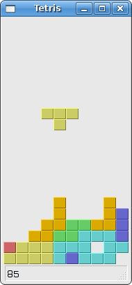

The tetris game in wxWidgets
Tetris
The tetris game is one of the most popular computer games ever created. The original game was designed and programmed by a russian programmer Alexey Pajitnov in 1985. Since then, tetris is available on almost every computer platform in lots of variations. Even my mobile phone has a modified version of the tetris game.
Tetris is called a falling block puzzle game. In this game, we have seven different shapes called tetrominoes. S-shape, Z-shape, T-shape, L-shape, Line-shape, MirroredL-shape and a Square-shape. Each of these shapes is formed with four squares. The shapes are falling down the board. The object of the tetris game is to move and rotate the shapes, so that they fit as much as possible. If we manage to form a row, the row is destroyed and we score. We play the tetris game until we top out.

wxWidgets is a toolkit designed to create applications. There are other libraries which are targeted at creating computer games. Nevertheless, wxWidgets and other application toolkits can be used to create games.
The development
We do not have images for our tetris game, we draw the tetrominoes using the drawing API available in the wxWidgets programming toolkit. Behind every computer game, there is a mathematical model. So it is in tetris.
Some ideas behind the game.
- We use wxTimer to create a game cycle
- The tetrominoes are drawn
- The shapes move on a square by square basis (not pixel by pixel)
- Mathematically a board is a simple list of numbers
tetris.bmxSuperStrict Framework wx.wxApp Import wx.wxFrame Import wx.wxPanel Import wx.wxTimer Import BRL.Random Const NoShape:Int = 0 Const ZShape:Int = 1 Const SShape:Int = 2 Const LineShape:Int = 3 Const TShape:Int = 4 Const SquareShape:Int = 5 Const LShape:Int = 6 Const MirroredLShape:Int = 7 New MyApp.Run() Type MyApp Extends wxApp Method OnInit:Int() SeedRnd(MilliSecs()) Local tet:Tetris = Tetris(New Tetris.Create(Null, wxID_ANY, .. "Tetris", -1, -1, 180, 380)) tet.Centre() tet.Show(True) Return True End Method End Type Type Tetris Extends wxFrame Method OnInit() Local sb:wxStatusBar = CreateStatusBar() sb.SetStatusText("0") Local brd:Board = Board(New Board.Create(Self,,,,,,wxWANTS_CHARS)) brd.SetFocus() brd.Start() End Method End Type Type Board Extends wxPanel Field timer:wxTimer Field isStarted:Int Field isPaused:Int Field isFallingFinished:Int Field curPiece:Shape = New Shape Field curX:Int Field curY:Int Field numLinesRemoved:Int Field theBoard:Int[] = New Int[BoardWidth * BoardHeight] Field m_stsbar:wxStatusBar Method OnInit() timer = New wxTimer.Create(Self, 1) m_stsbar = wxFrame(GetParent()).GetStatusBar() isFallingFinished = False isStarted = False isPaused = False numLinesRemoved = 0 curX = 0 curY = 0 ClearBoard() ConnectAny(wxEVT_PAINT, _OnPaint) ConnectAny(wxEVT_KEY_DOWN, _OnKeyDown) ConnectAny(wxEVT_TIMER, _OnTimer) End Method Const BoardWidth:Int = 10 Const BoardHeight:Int = 22 Method ShapeAt:Int(x:Int, y:Int) Return theBoard[(y * BoardWidth) + x] End Method Method SetShapeAt(x:Int, y:Int, shape:Int) theBoard[(y * BoardWidth) + x] = shape End Method Method SquareWidth:Int() Local width:Int, height:Int GetClientSize(width, height) Return width / BoardWidth End Method Method SquareHeight:Int() Local width:Int, height:Int GetClientSize(width, height) Return height / BoardHeight End Method Method Start() If isPaused Then Return End If isStarted = True isFallingFinished = False numLinesRemoved = 0 ClearBoard() NewPiece() timer.Start(300) End Method Method Pause() If Not isStarted Then Return End If isPaused = Not isPaused If isPaused Then timer.Stop() m_stsbar.SetStatusText("paused") Else timer.Start(300) m_stsbar.SetStatusText(numLinesRemoved) End If Refresh() End Method Function _OnPaint(event:wxEvent) Board(event.parent).OnPaint(wxPaintEvent(event)) End Function Method OnPaint(event:wxPaintEvent) Local dc:wxPaintDC = New wxPaintDC.Create(Self) Local width:Int, height:Int GetClientSize(width, height) Local boardTop:Int = height - BoardHeight * SquareHeight() For Local i:Int = 0 Until BoardHeight For Local j:Int = 0 Until BoardWidth Local shape:Int = ShapeAt(j, BoardHeight - i - 1) If shape <> NoShape Then DrawSquare(dc, 0 + j * SquareWidth(), .. boardTop + i * SquareHeight(), shape) End If Next Next If curPiece.GetShape() <> NoShape Then For Local i:Int = 0 Until 4 Local x:Int = curX + curPiece.x(i) Local y:Int = curY - curPiece.y(i) DrawSquare(dc, 0 + x * SquareWidth(), boardTop + .. (BoardHeight - y - 1) * SquareHeight(), .. curPiece.GetShape()) Next End If dc.Free() End Method Function _OnKeyDown(event:wxEvent) Board(event.parent).OnKeyDown(wxKeyEvent(event)) End Function Method OnKeyDown(event:wxKeyEvent) If Not isStarted Or curPiece.GetShape() = NoShape Then event.Skip() Return End If Local keycode:Int = event.GetKeyCode() If keycode = Asc("p") Or keycode = Asc("P") Then Pause() Return End If If isPaused Then Return End If Select keycode Case WXK_LEFT TryMove(curPiece, curX - 1, curY) Case WXK_RIGHT TryMove(curPiece, curX + 1, curY) Case WXK_DOWN TryMove(curPiece.RotateRight(), curX, curY) Case WXK_UP TryMove(curPiece.RotateLeft(), curX, curY) Case WXK_SPACE DropDown() Case Asc("d"), Asc("D") OneLineDown() Default event.Skip() End Select End Method Function _OnTimer(event:wxEvent) Board(event.parent).OnTimer(wxTimerEvent(event)) End Function Method OnTimer(event:wxTimerEvent) If isFallingFinished Then isFallingFinished = False NewPiece() Else OneLineDown() End If End Method Method ClearBoard() For Local i:Int = 0 Until BoardHeight * BoardWidth theBoard[i] = NoShape Next End Method Method DropDown() Local newY:Int = curY While newY > 0 If Not TryMove(curPiece, curX, newY - 1) Exit End If newY:- 1 Wend PieceDropped() End Method Method OneLineDown() If Not TryMove(curPiece, curX, curY - 1) Then PieceDropped() End If End Method Method PieceDropped() For Local i:Int = 0 Until 4 Local x:Int = curX + curPiece.x(i) Local y:Int = curY - curPiece.y(i) SetShapeAt(x, y, curPiece.GetShape()) Next RemoveFullLines() If Not isFallingFinished Then NewPiece() End If End Method Method RemoveFullLines() Local numFullLines:Int = 0 For Local i:Int = BoardHeight - 1 To 0 Step - 1 Local lineIsFull:Int = True For Local j:Int = 0 Until BoardWidth If ShapeAt(j, i) = NoShape Then lineIsFull = False Exit End If Next If lineIsFull Then numFullLines:+ 1 For Local k:Int = i Until BoardHeight - 1 For Local j:Int = 0 Until BoardWidth SetShapeAt(j, k, ShapeAt(j, k + 1)) Next Next End If Next If numFullLines > 0 Then numLinesRemoved :+ numFullLines m_stsbar.SetStatusText(numLinesRemoved) isFallingFinished = True curPiece.SetShape(NoShape) Refresh() End If End Method Method NewPiece() curPiece.SetRandomShape() curX = BoardWidth / 2 + 1 curY = BoardHeight - 1 + curPiece.MinY() If Not TryMove(curPiece, curX, curY) curPiece.SetShape(NoShape) timer.Stop() isStarted = False m_stsbar.SetStatusText("game over") End If End Method Method TryMove:Int(newPiece:Shape, newX:Int, newY:Int) For Local i:Int = 0 Until 4 Local x:Int = newX + newPiece.x(i) Local y:Int = newY - newPiece.y(i) If x < 0 Or x >= BoardWidth Or y < 0 Or y >= BoardHeight Then Return False End If If ShapeAt(x, y) <> NoShape Then Return False End If Next curPiece = newPiece curX = newX curY = newY Refresh() Return True End Method Method DrawSquare(dc:wxPaintDC, x:Int, y:Int, shape:Int) Global colors:wxColour [] = [ .. New wxColour.Create(0, 0, 0), .. New wxColour.Create(204, 102, 102), .. New wxColour.Create(102, 204, 102), .. New wxColour.Create(102, 102, 204), .. New wxColour.Create(204, 204, 102), .. New wxColour.Create(204, 102, 204), .. New wxColour.Create(102, 204, 204), .. New wxColour.Create(218, 170, 0) ] Global light:wxColour[] = [ .. New wxColour.Create(0, 0, 0), .. New wxColour.Create(248, 159, 171), .. New wxColour.Create(121, 252, 121), .. New wxColour.Create(121, 121, 252), .. New wxColour.Create(252, 252, 121), .. New wxColour.Create(252, 121, 252), .. New wxColour.Create(121, 252, 252), .. New wxColour.Create(252, 198, 0) ] Global dark:wxColour[] = [ .. New wxColour.Create(0, 0, 0), .. New wxColour.Create(128, 59, 59), .. New wxColour.Create(59, 128, 59), .. New wxColour.Create(59, 59, 128), .. New wxColour.Create(128, 128, 59), .. New wxColour.Create(128, 59, 128), .. New wxColour.Create(59, 128, 128), .. New wxColour.Create(128, 98, 0) ] Local pen:wxPen = New wxPen.CreateFromColour(light[shape]) pen.SetCap(wxCAP_PROJECTING) dc.SetPen(pen) dc.DrawLine(x, y + SquareHeight() - 1, x, y) dc.DrawLine(x, y, x + SquareWidth() - 1, y) Local darkpen:wxPen = New wxPen.CreateFromColour(dark[Int(shape)]) darkpen.SetCap(wxCAP_PROJECTING) dc.SetPen(darkpen) dc.DrawLine(x + 1, y + SquareHeight() - 1, x + SquareWidth() - 1, .. y + SquareHeight() - 1) dc.DrawLine(x + SquareWidth() - 1, y + SquareHeight() - 1, .. x + SquareWidth() - 1, y + 1) dc.SetPen(wxTRANSPARENT_PEN()) dc.SetBrush(New wxBrush.CreateFromColour(colors[shape])) dc.DrawRectangle(x + 1, y + 1, SquareWidth() - 2, SquareHeight() - 2) End Method End Type Type Shape Global coordsTable:Int[][][] = [ .. [ [ 0, 0 ], [ 0, 0 ], [ 0, 0 ], [ 0, 0 ] ], .. [ [ 0, -1 ], [ 0, 0 ], [ -1, 0 ], [ -1, 1 ] ], .. [ [ 0, -1 ], [ 0, 0 ], [ 1, 0 ], [ 1, 1 ] ], .. [ [ 0, -1 ], [ 0, 0 ], [ 0, 1 ], [ 0, 2 ] ], .. [ [ -1, 0 ], [ 0, 0 ], [ 1, 0 ], [ 0, 1 ] ], .. [ [ 0, 0 ], [ 1, 0 ], [ 0, 1 ], [ 1, 1 ] ], .. [ [ -1, -1 ], [ 0, -1 ], [ 0, 0 ], [ 0, 1 ] ], .. [ [ 1, -1 ], [ 0, -1 ], [ 0, 0 ], [ 0, 1 ] ] .. ] Field pieceShape:Int Field coords:Int[][] = [ [0,0], [0,0], [0,0], [0,0] ] Method New() SetShape(NoShape) End Method Method SetShape(shape:Int) For Local i:Int = 0 Until 4 For Local j:Int = 0 Until 2 coords[i][j] = coordsTable[shape][i][j] Next Next pieceShape = shape End Method Method SetRandomShape() Local x:Int = Rand(0, 21) Mod 7 + 1 SetShape(x) End Method Method GetShape:Int() Return pieceShape End Method Method x:Int(index:Int) Return coords[index][0] End Method Method y:Int(index:Int) Return coords[index][1] End Method Method MinX:Int() Local m:Int = coords[0][0] For Local i:Int = 0 Until 4 m = Min(m, coords[i][0]) Next Return m End Method Method MaxX:Int() Local m:Int = coords[0][0] For Local i:Int = 0 Until 4 m = Max(m, coords[i][0]) Next Return m End Method Method MinY:Int() Local m:Int = coords[0][1] For Local i:Int = 0 Until 4 m = Min(m, coords[i][1]) Next Return m End Method Method MaxY:Int() Local m:Int = coords[0][1] For Local i:Int = 0 Until 4 m = Max(m, coords[i][1]) Next Return m End Method Method RotateLeft:Shape() If pieceShape = SquareShape Then Return Self End If Local result:Shape = New Shape result.pieceShape = pieceShape For Local i:Int = 0 Until 4 result.SetX(i, y(i)) result.SetY(i, -x(i)) Next Return result End Method Method RotateRight:Shape() If pieceShape = SquareShape Then Return Self End If Local result:Shape = New Shape result.pieceShape = pieceShape For Local i:Int = 0 Until 4 result.SetX(i, -y(i)) result.SetY(i, x(i)) Next Return result End Method Method SetX(index:Int, x:Int) coords[index][0] = x End Method Method SetY(index:Int, y:Int) coords[index][1] = y End Method End Type
I have simplified the game a bit, so that it is easier to understand. The game starts immediately, after it is launched. We can pause the game by pressing the p key. The space key will drop the tetris piece immediately to the bottom. The d key will drop the piece one line down. (It can be used to speed up the falling a bit.) The game goes at constant speed, no acceleration is implemented. The score is the number of lines, that we have removed.
... isFallingFinished = False isStarted = False isPaused = False numLinesRemoved = 0 curX = 0 curY = 0 ...
Before we start the game, we initialize some important variables. The isFallingFinished variable determines, it the tetris shape has finished falling and we then need to create a new shape. The numLinesRemoved counts the number of lines, we have removed so far. The curX and curY variables determine the actual position of the falling tetris shape.
For Local i:Int = 0 Until BoardHeight
For Local j:Int = 0 Until BoardWidth
Local shape:int = ShapeAt(j, BoardHeight - i - 1)
If shape <> NoShape Then
DrawSquare(dc, 0 + j * SquareWidth(), ..
boardTop + i * SquareHeight(), shape)
End If
Next
Next
The painting of the game is divided into two steps. In the first step, we draw all the shapes, or remains of the shapes, that have been dropped to the bottom of the board. All the squares are rememberd in the board array. We access it using the ShapeAt() method.
If curPiece.GetShape() <> NoShape Then
For Local i:Int = 0 Until 4
Local x:Int = curX + curPiece.x(i)
Local y:Int = curY - curPiece.y(i)
DrawSquare(dc, 0 + x * SquareWidth(), boardTop + ..
(BoardHeight - y - 1) * SquareHeight(), ..
curPiece.GetShape());
Next
End If
The next step is drawing of the actual piece, that is falling down.
...
Select keycode
Case WXK_LEFT
TryMove(curPiece, curX - 1, curY)
...
In the OnKeyDown() method we check for pressed keys. If we press the left arrow key, we try to move the piece to the left. We say try, because the piece might not be able to move.
Method OnTimer(event:wxTimerEvent)
If isFallingFinished Then
isFallingFinished = False
NewPiece()
Else
OneLineDown()
End If
End Method
In the OnTimer() method we either create a new piece, after the previous one was dropped to the bottom, or we move a falling piece one line down.
Method DropDown()
Local newY:Int = curY
While newY > 0 Then
If Not TryMove(curPiece, curX, newY - 1) Then
Exit
End If
newY:- 1
Wend
PieceDropped()
Wend
The Board::DropDown() method drops the falling shape immediately to the bottom of the board. It happens, when we press the space key.
Method PieceDropped()
For Local i:Int = 0 Until 4
Local x:Int = curX + curPiece.x(i)
Local y:Int = curY - curPiece.y(i)
SetShapeAt(x, y, curPiece.GetShape())
Next
RemoveFullLines()
If Not isFallingFinished Then
NewPiece()
End IF
End Method
In the PieceDropped() method we set the current shape at it's final position. We call the RemoveFullLines() method to check, if we have at least one full line. And we create a new tetris shape, if it wasn't already created in the Board::PieceDropped() method in the meantime.
If lineIsFull Then
numFullLines :+ 1
For Local k:Int = i Until BoardHeight - 1
For Local j:Int = 0 Until BoardWidth
SetShapeAt(j, k, ShapeAt(j, k + 1))
Next
Next
End If
This code removes the full lines. After finding a full line we increase the counter. We move all the lines above the full row one line down. This way we destroy the full line. Notice, that in our tetris game, we use so called naive gravity. This means, that the squares may be left floating above empty gaps.
Method NewPiece()
curPiece.SetRandomShape()
curX = BoardWidth / 2 + 1
curY = BoardHeight - 1 + curPiece.MinY()
If Not TryMove(curPiece, curX, curY)
curPiece.SetShape(NoShape)
timer.Stop()
isStarted = false
m_stsbar.SetStatusText("game over")
End If
End Method
The NewPiece() method creates randomly a new tetris piece. If the piece cannot go into it's initial position, the game is over.
Method TryMove:Int(newPiece:Shape, newX:Int, newY:Int)
For Local i:Int = 0 Until 4
Local x:Int = newX + newPiece.x(i)
Local y:Int = newY - newPiece.y(i)
If x < 0 Or x >= BoardWidth Or y < 0 Or y >= BoardHeight Then
Return False
End If
If ShapeAt(x, y) <> NoShape Then
Return False
End If
Next
curPiece = newPiece
curX = newX
curY = newY
Refresh()
Return True
End Method
In the TryMove() method we try to move our shapes. If the shape is at the edge of the board or is adjacent to some other shape, we return false. Otherwise we place the current falling shape to a new position and return true.
The Shape class saves information about the tetris piece.
For Local i:Int = 0 Until 4
For Local j:Int = 0 Until 2
coords[i][j] = coordsTable[shape][i][j]
Next
Next
The coords array saves the coordinates of the tetris piece. For example, numbers { 0, -1 }, { 0, 0 }, { 1, 0 }, { 1, 1 } , represent a rotated S-shape. The following diagram illustrates the shape.

When we draw the current falling piece, we draw it at curX, curY position. Then we look at the coordinates table and draw all the four squares.
